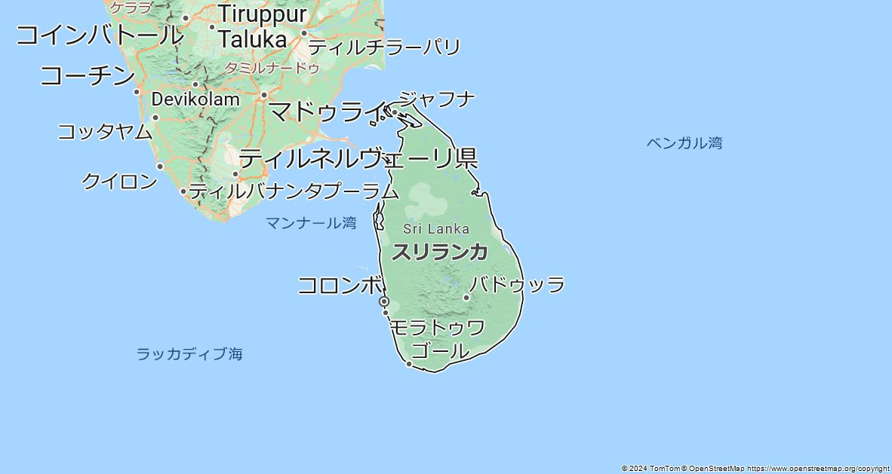
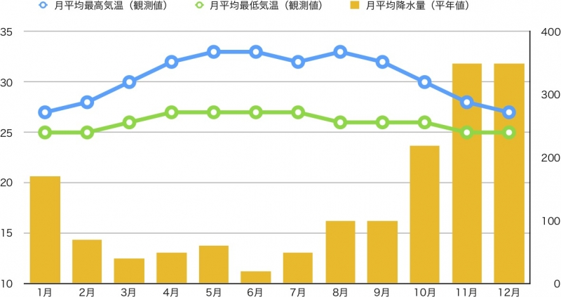
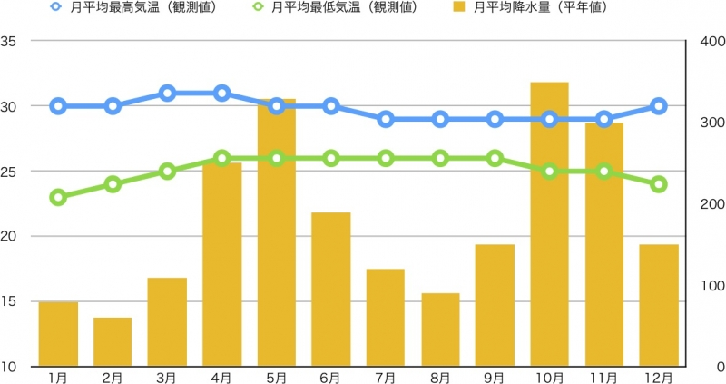
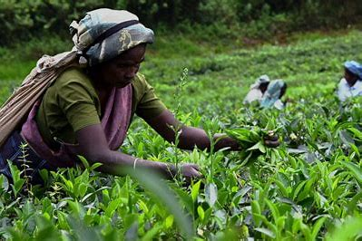
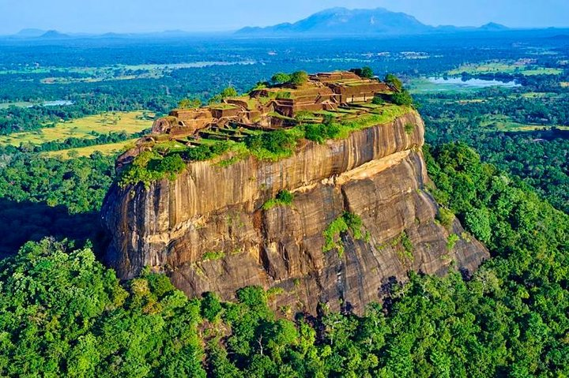
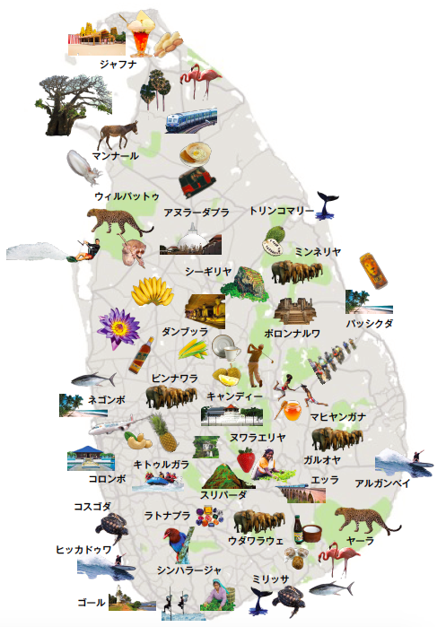

スリランカについて
位置や分布
スリランカは南アジアの島国で、インド洋に位置しています。
場所
北東部の気温・降水量
南西部の気温・降水量
スリランカでは北東部と南西部で、赤道付近から吹きつける南西モンスーンと、ベンガル湾から吹きつける北東モンスーンという2つの季節風により気候が異なります
人間と自然環境との相互依存関係
スリランカの人々は長い間、豊かな自然環境と共に生活しており、農業や漁業が盛んです。
空間的相互依存作用
スリランカは小さな島国ですが、山岳地帯、低地、海岸線などの異なる地形が経済活動や生活様式に影響を与えています。
地域
スリランカは9つの州（Province）に分かれており、それぞれが特有の地理的・文化的特性を持っています。
SDGs
 スリランカはSDGsに取り組んでおり、特に貧困削減、教育の普及、清潔な水の提供、エネルギーの持続可能性、気候変動への適応が重要な課題です。
スリランカはSDGsに取り組んでおり、特に貧困削減、教育の普及、清潔な水の提供、エネルギーの持続可能性、気候変動への適応が重要な課題です。
スリランカはその豊かな自然と歴史的な遺産、そして多様な文化で知られ、多くの観光客が訪れる国です。